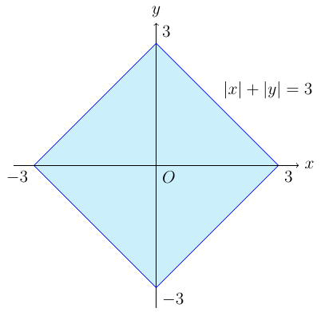
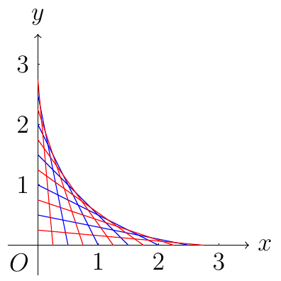
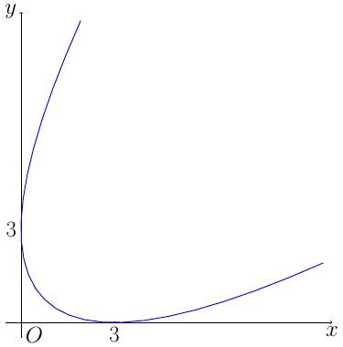
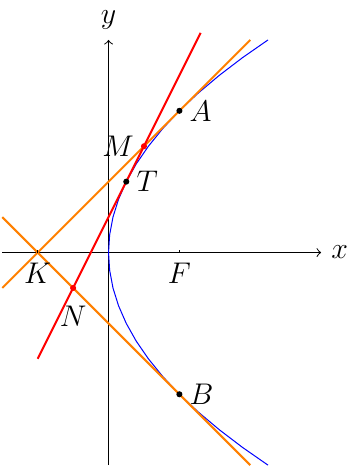

今天在给一个学生讲题的时候遇到了这样一道题目：
求 ∣x∣+∣y∣≤3 所包含的区域的面积．

易知，这是个正方形，面积是 (32)2=18．它在第一象限的边界点应该是形如 (t,3−t) 的点，都在 x+y=3 这条直线上．
但是，这个学生却想成了 (t,0) 和 (0,3−t) 的连线，把所有这样的线都画出来，发现它的边界是一条弧线．于是，这个学生就认为它的边界应该是一条圆弧．

显然，这个学生的错误是很明显的．但这也带来了一个问题：如果按照学生所想的，那么面积应该是多少？
那么首先需要确定的是，它的边界到底是什么？
1. 边界曲线
我们只考虑第一象限的情况．
1.1. 解法一
这个区域的边界，应该是取最靠外的点，或者是，最靠上的点．于是我们可以想办法求出，在每一个 x 处，对应的 y 的最大值．
设线段的方程为
ax+3−ay=1(1)
其中 0<a<3，0≤x≤3，于是
y=(3−a)(1−ax)=3+x−a−a3x=3+x−(a+a3x)≤3+x−2a⋅a3x=3+x−23x=(3−x)2
所以边界应该是
x+y=3.(2)
1.2. 解法二
实际上，这个边界是所有满足条件的线段的包络线．
设线段所在直线的方程为
F(x,y,a)=(3−a)x+ay−a(3−a)=a2−(x−y+3)a+3x=0
于是有
∂a∂F=2a−(x−y+3)=0
从而 a=2x−y+3，代入到前一个方程消去 a，可以得到
41(x−y+3)2−21(x−y+3)2+3x=0
化简得
(x−y+3)2=12x(3)
其图像如下：

可以验证，方程 (3) 和我们前面求出的方程 (2) 是一致的．
1.3. 解法三
设直线方程同解法二，注意到对于每一个 (x,y)，有且仅有一个 a 满足条件．于是有
Δ=(x−y+3)2−12x=0
很明显，和解法二得到的结果是一样的．
此解法的出处
此处称该曲线为绣曲线，但我只在此处和中文维基百科的包络线里面见到了这个名词．目前还不清楚这是否是通用的名词．
2. 围出的面积
第一象限所求的面积，就相当于边界和 x 轴所夹的面积，因此
S=∫03(3+x+23x)dx=[3x+21x2+32⋅32(3x)23]∣∣∣∣∣03=9+4.5+4=22.5
于是四个象限的区域面积一共是 22.5×4=90．
3. 曲线的类型
很明显，这是一条二次曲线的一部分．经过仿射变换
{x′=xy′=x−y+3
变为 y′2=12x，容易看出这是一条抛物线．
如果要做保距变换的话，则是
⎝⎛xy⎠⎞=⎝⎜⎜⎛cos4πsin4π−sin4πcos4π⎠⎟⎟⎞⎝⎛x′y′⎠⎞+⎝⎜⎜⎛4343⎠⎟⎟⎞
此时方程变为 y′2=32x′，焦点为 (432,0)，准线为 x′=−432．
于是原抛物线的焦点是 (23,0)，准线为 y=x．
4. 问题拓展
在高中学习抛物线的时候，有这样一道题目：
对于抛物线 y2=2px，过点K(−2p,0) 作抛物线的两条切线，切点分别为 A、B，过抛物线在两切点之间的部分上的任意一点，作抛物线的切线，分别交 KA、KB 与 M、N，求证： ∣KM∣+∣KN∣ 为定值．

4.1. 证明
抛物线在 (x0,y0) 处的切线是 MN:y=y0p(x+x0)．易知经过 K 的两条切线的方程为 y=±(x+2p)，从而可解得交点的纵坐标为 yM,N=±1−py02p−x0，因此
∣KM∣+∣KN∣=2∣yM−yN∣=2p
为定值．
4.2. 与前面的联系
其实仔细观察一下就会发现，抛物线这道题里面的 MN，就是我们方程 (1) 所对应的线段，所有满足条件的 MN 的包络线就是抛物线在 A、B 之间的部分！